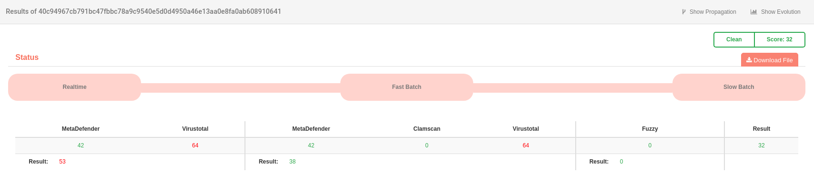
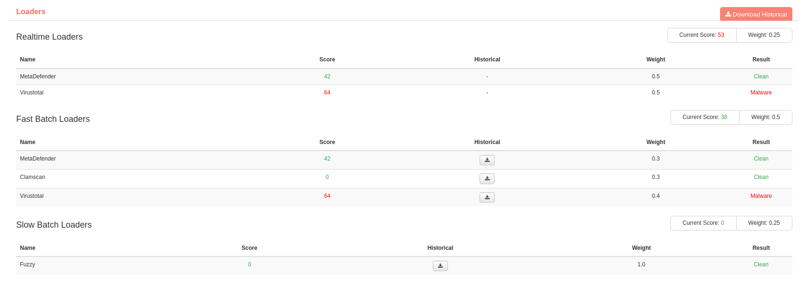

Al seleccionar la opción Analysis el usuario visualiza un completo resumen sobre el estado del fichero.
En la pantalla de Analysis se muestra la siguiente información:
Status
En este apartado se muestra el progreso del análisis del fichero y la información correspondiente a los servicios externos de reputación.
Es posible descargar el fichero que se está analizando mediante la opción Download File. Se descargará un fichero comprimido en formato .zip, cuya contraseña es infected.
Loaders
En este apartado se muestra con mayor grado de detalle el proceso y resultado del análisis realizado por los diferentes cargadores o servicios de reputación.
Es posible realizar la descarga del histórico del fichero en formato JSON.
Nota
Estos son los valores que pueden aparecer como resultado del análisis realizado por los cargadores:
-: elemento no analizado.
Unknown: el elemento ha sido analizado, pero el resultado es desconocido (equivalente a un score de -1).

Analysis -> Status

Analysis -> Loaders
Nota
En cualquier momento se puede pasar a la vista de Evolución o Propagación del objeto que se está analizando, gracias a la posibilidad de saltar de una vista a otra mediante las opciones que se muestran en el margen superior derecho: Show Evolution/Show Propagation.